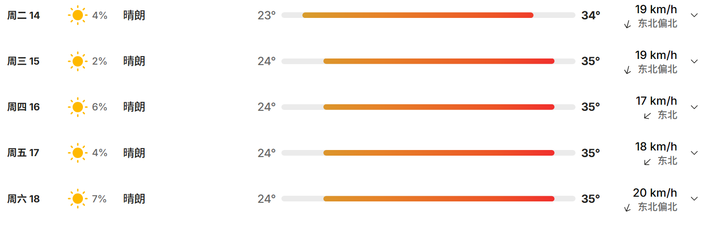
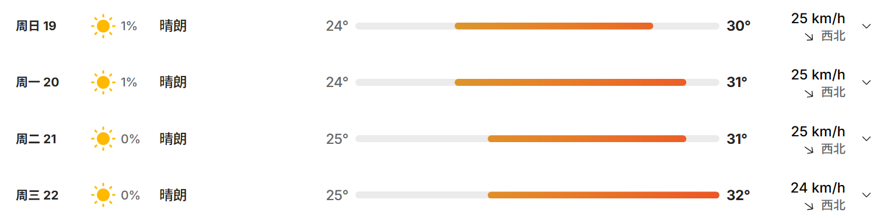

Athens
总统酒店 President Hotel
Leof. Kifisias 43, Athina
电话：+0030-21-06989000
入住 2025.07.14，退房 2025.07.18，共 4 晚。
Qian Zai Tong Xi · Greece Guide
行程、住宿、安全与调研。一部手机，随手即达。
Schedule
每天去哪、几点出发，一眼就知道。维也纳与布拉格模板先留在这里，等待更新。
Before Departure
要带什么、住在哪里、怎么开口。出发前，一次备齐。
Athens
Leof. Kifisias 43, Athina
电话：+0030-21-06989000
入住 2025.07.14，退房 2025.07.18，共 4 晚。
Heraklion
Leof. 62 Martiron 1
电话：+0030-281-0251212
入住 2025.07.19，退房 2025.07.22，共 3 晚。
不可携带肉制品、乳制品、蛋类、新鲜水果或蔬菜等入境。现金、电源类不可托运，只能随身携带。
| 姓名 | 性别 | 简介 | 职务 | 手机号 |
|---|
Safety
交通、天气、礼仪与求助电话。需要时，马上找到。


护照丢失：先向警察局报案，再到大使馆申请补发。提前准备证件照、护照签发机关、日期、号码及护照复印件。
财物与行李：现金、相机、首饰、手表等贵重物品随身携带；离开游览车、酒店或餐厅时再次确认。
托运行李：办妥托运后保管好行李标签。行李未到时凭标签到机场行李挂失处登记；相机、现金等贵重物品不要托运。
只在需要时解锁。成员手机号已在名单中直接显示。
Research
调研脉络与采访提纲，按日期收好。维也纳、布拉格内容暂待更新。
支队聚焦“一带一路”视域下中希文明互鉴，关注古典文明的当代样态与创新发展路径，通过实地调研、青年对话与文化交流，探索古典文明如何融入现代社会、实现创造性转化与创新性发展。